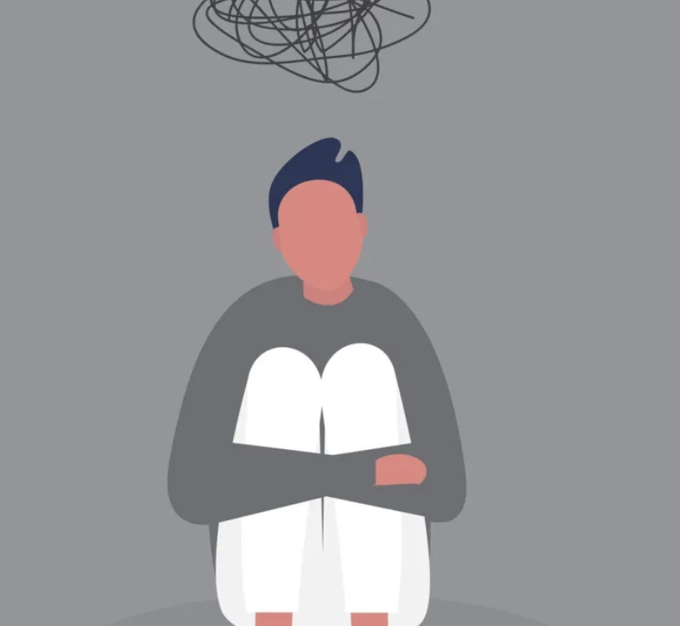
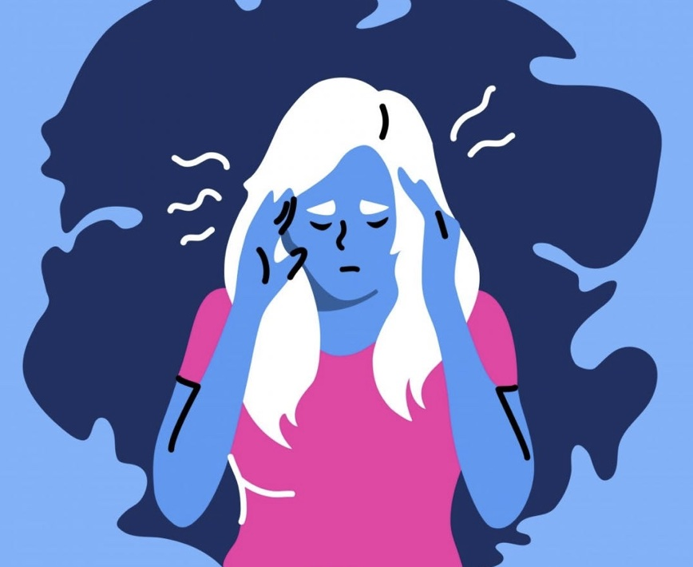
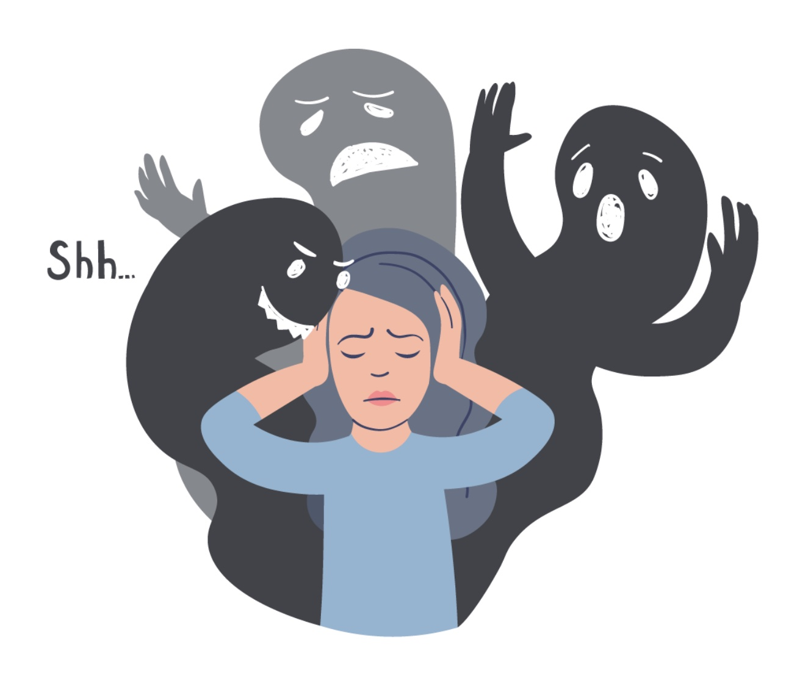
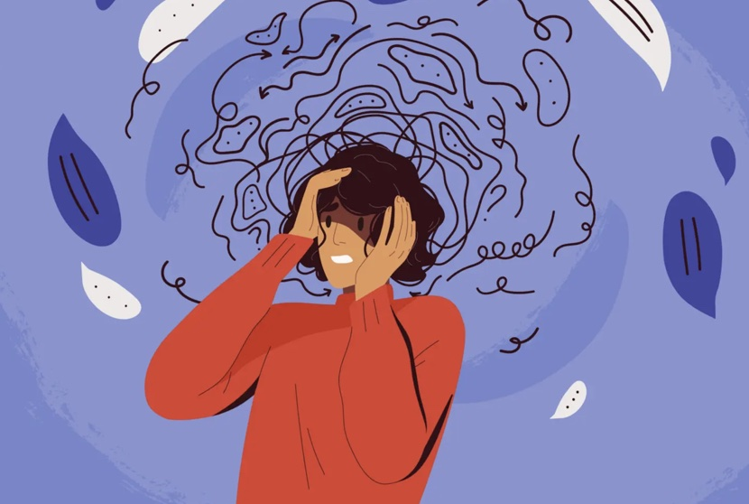
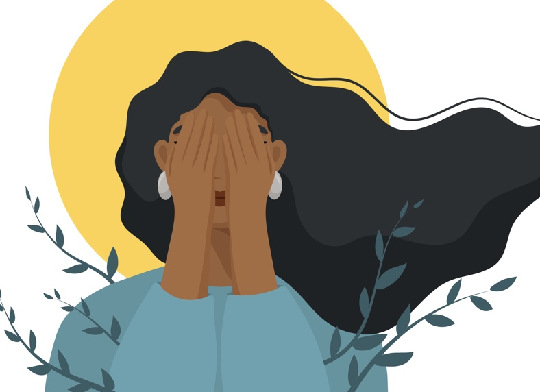

A collection of writing pieces on all things anxiety.

"It is impossible to imagine a color you have not seen. / I can’t call my mother because she makes me panic,” Hilborn writes. “. . . I complete five crosswords a day because it stops the panic. / Trucks are downshifting on main street. / Most of what I do, I do to stop the panic. / I never cry about things outside of my head because they all seem so far away."

"I’ve wasted a lot of time in my life. I’ve thought too much about what people will say or what they’re gonna think. And sometimes it’s over silly things like going to the grocery store or going to the post office. But there have been times when I really stopped myself from doing something special. All because I was scared someone might look at me and decide I wasn’t good enough. But you don’t have to bother with that nonsense. I wasted all that time so you don’t have to."

This is a wider card with supporting text below as a natural lead-in to additional content. This card has even longer content than the first to show that equal height action.

"You / who I don’t know / I don’t know how to talk to you / —What is it like for you there?” asks Valentine. “Here … well, wanting solitude; and talk; friendship— / The uses of solitude. To imagine; to hear. / Learning braille. To imagine other solitudes. / But they will not be mine; / to wait, in the quiet; not to scatter the voices— / What are you afraid of? / … Yes I know: the thread you have to keep finding, over again, to / follow it back to life."

"I stood frozen, my hands tangled in themselves, my fingers twirling the cords and medals hanging over my shoulders. My face was stiff, my eyes laser sharp, my lips set in a firm, straight line, and the muscles in my jaw were protruding ever so slightly."